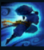

Yasuo
| Yasuo The Unforgiven | |
|---|---|
| Release date | 13.12.2013 |
| Class | Skirmisher |
| Positions | Top,Middle,Bottom |
| Resource | Flow |
| Range type | Melee |
| Adaptive type | Physical |
| Base statistics | |||
| Health | 490 – 1969 | Resource | N/A |
| Health regen. | 6.5 – 21.8 |
Secondary Bar | Flow (100) |
| Armor | 30 – 87.8 | Attack damage | 60 – 97.4 |
| Magic resist. | 32 – 53.25 | Crit. damage | 175% ( × 0.9) |
| Move. speed | 345 | Attack range | 175 |
Yasuo este un ionian foarte hotărât și un spadasin agil, care controlează puterea vântului pentru a-și ucide adversarii. Pe când era un tânăr mândru, a fost acuzat pe nedrept de uciderea maestrului său. Nu a putut să-și dovedească nevinovăția și a fost obligat să-și ucidă propriul frate ca să se apere. Chiar și după ce a fost descoperit adevăratul ucigaș, Yasuo nu s-a putut ierta pentru nimic, iar acum rătăcește prin ținuturile sale natale, lăsând vântul să-i călăuzească sabia. | CALEA RĂTĂCITORULUI Șansele de lovitură critică ale lui Yasuo sunt sporite. În plus, atunci când se mișcă, generează un scut. Scutul se declanșează când Yasuo suferă daune din partea unui campion sau a unui monstru. |
|||
|---|---|---|---|---|
FURTUNĂ DE OȚEL Atacă și le provoacă daune tuturor inamicilor într-o linie. La impact, oferă un cumul de ''Furtună iminentă'' timp de câteva secunde. La 2 cumuluri, ''Furtuna de oțel'' trimite un vârtej care aruncă în sus inamicii. ''Furtuna de oțel'' se comportă ca un atac de bază, iar timpul său de reactivare și de încărcare sunt reduse de viteza de atac. |
||||
 |
ZID DE VÂNT Creează un zid care se deplasează și care blochează toate proiectilele inamice timp de 4 secunde. |
|||
|  |
VÂNT TĂIOS Se năpustește spre inamicul-țintă și trece prin el, provocându-i daune magice. Fiecare activare crește daunele de bază provocate de următoarea năpustire, până la un nivel maxim. Nu poți folosi abilitatea din nou asupra aceluiași inamic timp de câteva secunde. Dacă este folosită în timpul năpustirii, ''Furtuna de oțel'' va lovi într-o zonă de cerc. |
|||
ULTIMA RĂSUFLARE Se deplasează instantaneu până la un campion inamic aruncat în sus, îi provoacă daune fizice și menține în aer toți inamicii aruncați în sus din apropiere. Oferă ''Flux'' maxim, dar resetează toate cumulurile de ''Furtună iminentă''. Pentru o perioadă medie de timp, loviturile critice ale lui Yasuo primesc o valoare semnificativă de penetrare a armurii bonus. |